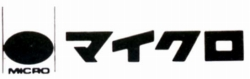
MICRO(マイクロ)
マニアックな 糸ドライブ駆動アナログディスクプレーヤー等で知られた、オーディオメーカー。かつてＣＤプレイヤーやプリアンプ等も出したこともあるが、アナログプレーヤーに変わる主要商品を生み出せず、現在では少なくともオーディオのジャンルからは完全に消えている。
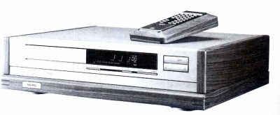
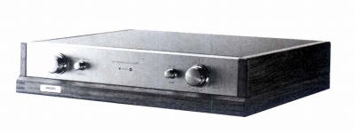
（1980年代末に出したCDプレイヤー CD-M100とフォノレス・バッテリードライブのプリアンプ CL-M2DC）
ヘッドフォンに関しては1970年代にコンデンサー型のヘッドフォンを販売していたことがある。MX-1は評論家の故 高城重躬氏も一時使っていたヘッドフォンで初期はバッテリーバイアズ、後期はAC電源によるバイアスのアダプターが用意されていた。MX-5はごく短い期間しか販売されなかったモデル。デザインはMX-1と似ているが、アダプターの共用は不可能な可能性が高い。
MX-1
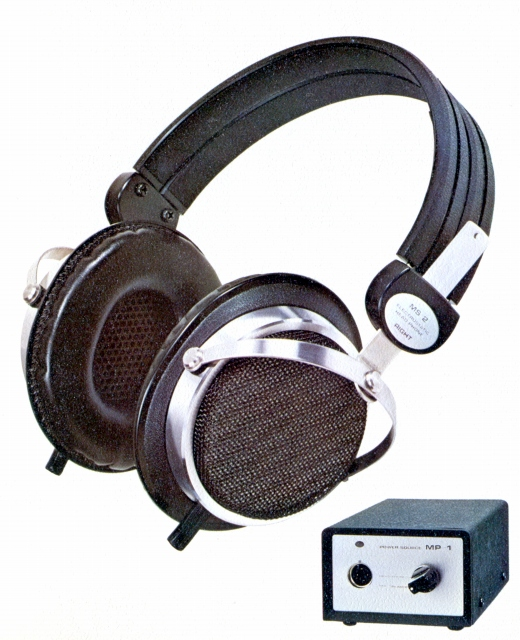
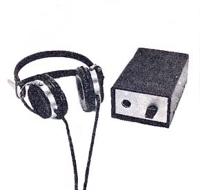
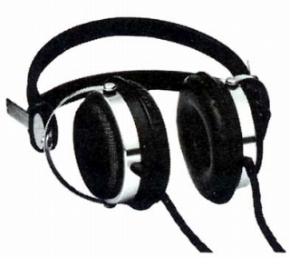
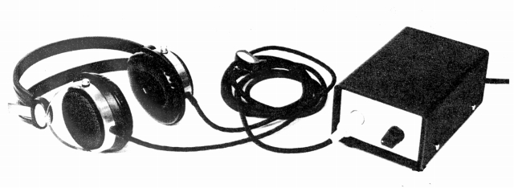
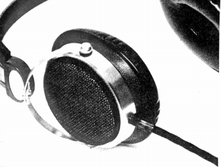
■価格 13,800円
■型式 エレクトレットスタティック型オープンエアタイプ
■振動板
■インピーダンス
■再生周波数帯域 20-25,000Hz
■許容入力
■感度 98dB/1kHz
入力100V
■コード 2.5m
■重量 本体＝240g (コード 60g)
電源＝1.1kg（バッテリ/ACバイアスモデルとも）
■発売 1972年
■販売終了 1977年
■備考
価格は1972年頃のもの 1974年以降は16,600円
MX-1はヘッドフォン本体とアダプタを別売りしていたらしい
（内訳）ヘッドフォン本体 MS-2(8,200円→9,800円)、電源部 MP-1(5,600円→6,800円)
他に延長コード(ME-3)がオプションであったらしい。
006P9Vのバッテリーバイアスの製品とAC電源によるバイアスの製品がある。
アダプターの切替スイッチのノブのデザインが異なる。
振動板についてはジェラルミンのプレスだという情報あり。
当時としてはあか抜けたデザインをしていた。「ステレオ」誌の中表紙のモデルとなった。
発売当初は、AC電源モデルはなかったようだ。→広告参照
別売りアクセサリーに延長コードME-3あり 電池寿命は1日4時間使用で2年(2000時間とする資料もあり）
また電圧が6Vまで低下するとカットオフし、電池の消耗を知らせる機能があったという。
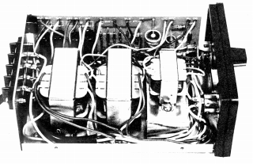 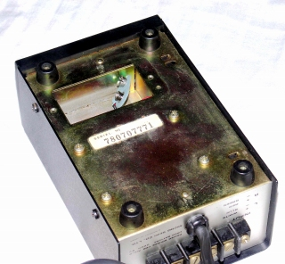
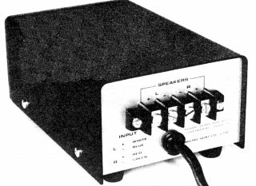
（バッテリーバイアスモデルのアダプター）
逆に後期にはバッテリーバイアスモデルはなくなり、ACバイアスモデルのみとなっていた。
1974年2月版カタログではバッテリーバイアスモデルが、1976年2月版カタログにACバイアスモデルが載っている。
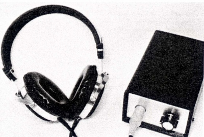
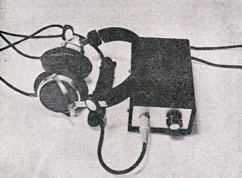
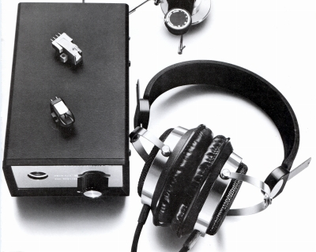
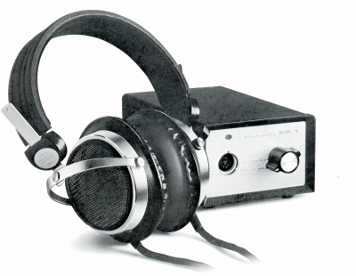
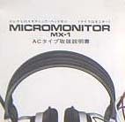
（AC電源モデルと取説）
またAC電源モデルは概ねヘッドバンドがバッテリーバイアスモデルと違うが、本体は旧来のデザインのままの写真も存在する。ヘッドバンドについては、後継モデルのMX-5で再びMX-1の初期型と同じタイプになっているので、二重バンドのAC電源モデルがどの時代のものかは不明である。
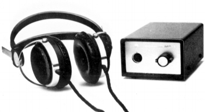
（二重のヘットバンドを持つAC電源タイプらしき個体）
MX-5
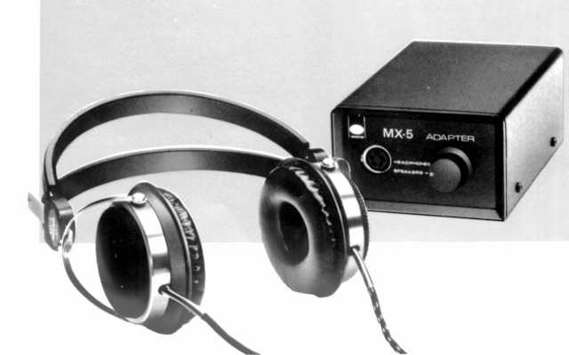
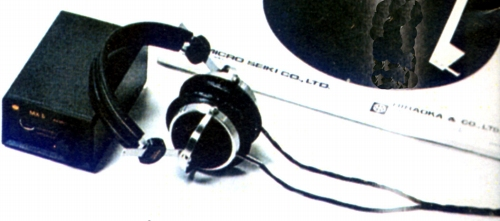
■価格 23,000円
■型式 エレクトレットスタティック型オープンエアタイプ
■振動板
■インピーダンス
■再生周波数帯域 20-25,000Hz
■許容入力
■感度 98dB
SPL
1kHz/入力1V
■コード 2.5m
■重量 240g アダプター1,200ｇ
■発売 1978年頃
■販売終了 1979年頃
■備考
本体デザインはMX-1とほぼ同じ
カタログにはバイアス電源関係の記載がなく、
エレクトレットコンデンサー型である可能性がある。
アダプター外寸 100W×65H×180D(mm)
なおカタログでは「Q-コンスタント」型との記載があるが
こうした呼び方はナポレックスがEX-1で使っている。